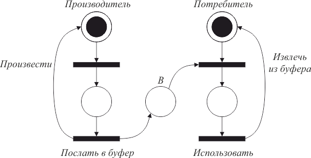

В задаче о производителе/потребителе также присутствует разделяемый объект – буфер, посредством которого реализуется взаимодействие через асинхронную передачу сообщений. Процесс-производитель создает сообщения, которые помещаются в буфер. Потребитель ждет, пока сообщение не будет помещено в буфер, извлекает его оттуда и использует.
Такое взаимодействие может быть промоделировано сетью Петри, изображенной на рисунке 4.9.

Рис. 4.9 – Сеть Петри для задачи «производитель/потребитель»
Позиция представляет буфер, каждая фишка соответствует сообщению, которое произведено, но еще не использовано.